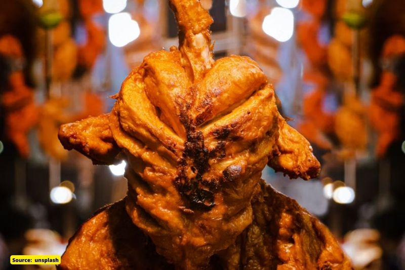
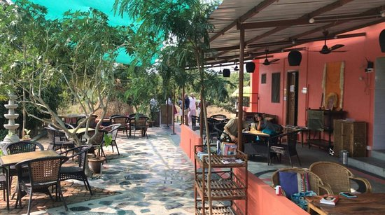
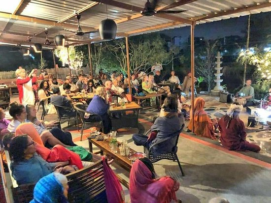

FOOD SHOP LOKI
NON-VEG FOOD
ORDER NOWW..
INDIAN FOOD

ORDER NOWW...
MY HOTEL OPPINION
A customer in Indore ordered vegetable biryani and he found pieces of bone in his dish. After the incident, cops in Indore, Madhya Pradesh, booked the restaurant owner for serving non-vegetarian food to a vegetarian. Netizens are infuriated by the news and are expressing their outrage on social media.
Tiruvannamalai district, Tamil Nadu. He claimed to have discovered a rat's head in one of the plates. He placed an order for 35 food packs from Sri Balaji Bhavan, a vegetarian restaurant, for a family gathering. He said that one of the visitors discovered what seemed to be a rat's head in a beetroot dish and claimed it was a round bone like object. When he arrived at the restaurant with the package, he confronted the owner and staff about the inclusion of the round, bone-like thing in a vegetarian dish. He accused the hotel managers of unsanitary food preparation. The Arni Town police station intervened and sent a team to resolve the conflict. The customer reported the incident to the police, who began a probe.
